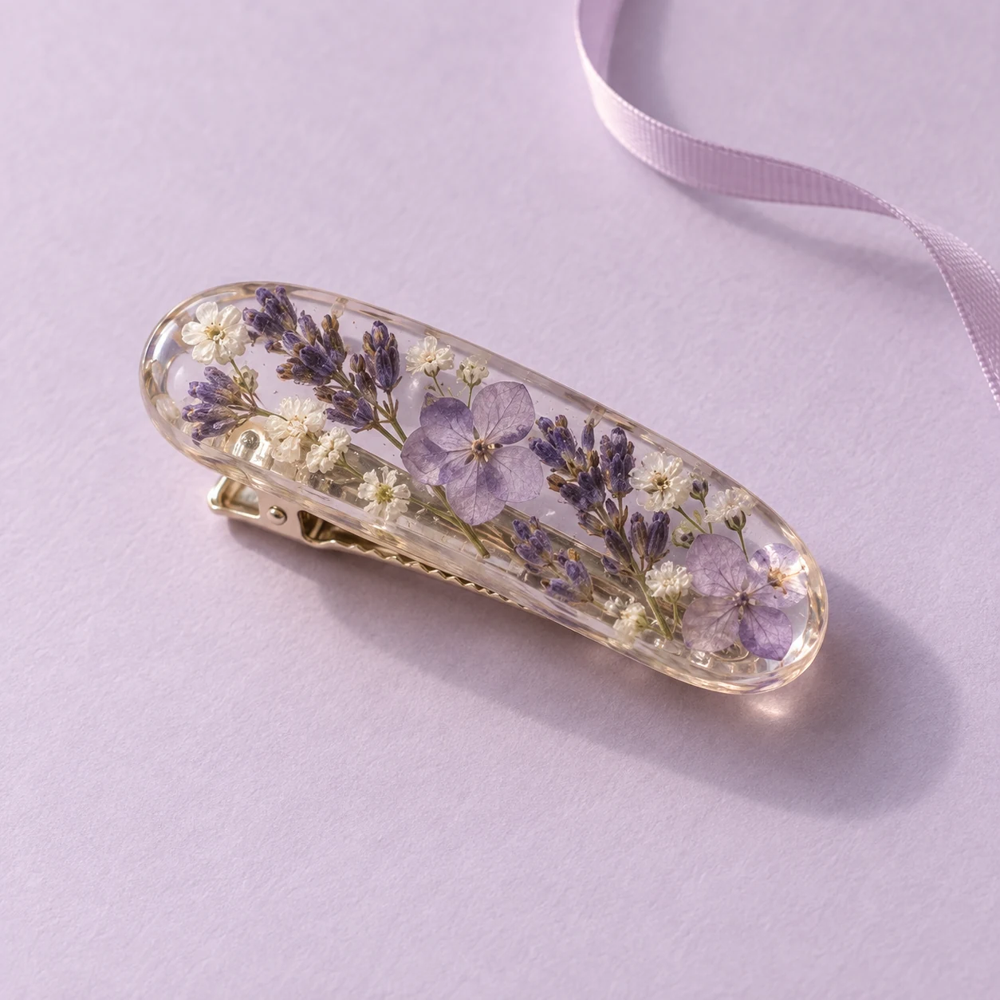
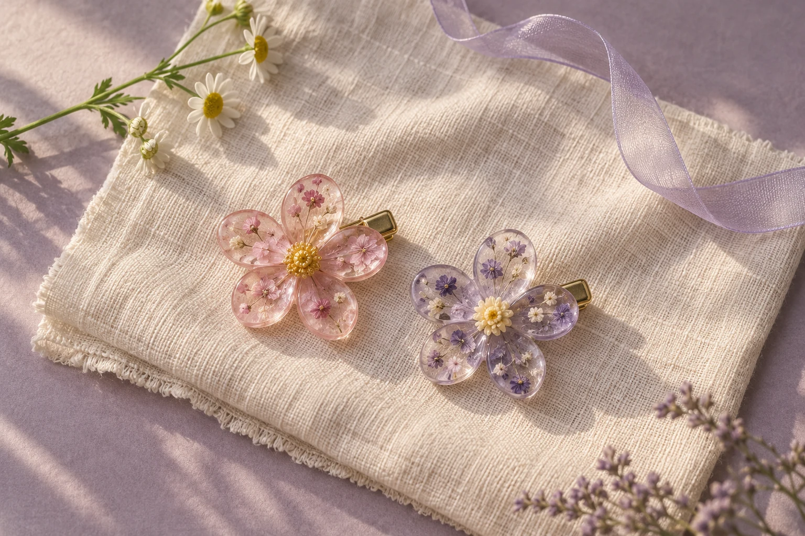

A NOTE FROM MORI
把花留住，
把喜歡戴走。
森花，從一個簡單的想法開始：
讓那些捨不得錯過的美好，
以小小飾品的模樣，留在身邊。
喜歡花瓣自然舒展的樣子，也喜歡手作裡
一點不完全相同的細節。願這份小小心意，
陪你度過好多個喜歡自己的日子。
一朵花、一點手作的溫度，
陪你收藏每個平凡又閃亮的時刻。

THE LITTLE COLLECTION
讓喜歡的顏色，
成為今天的小亮點。
點一下作品上的愛心，就能在這裡找到它。

A NOTE FROM MORI
森花，從一個簡單的想法開始：
讓那些捨不得錯過的美好，
以小小飾品的模樣，留在身邊。
喜歡花瓣自然舒展的樣子，也喜歡手作裡
一點不完全相同的細節。願這份小小心意，
陪你度過好多個喜歡自己的日子。
KEEP THE LITTLE BEAUTY
多一點溫柔，
讓喜歡陪你久一點。
花材的大小、顏色與排列各有不同，樹脂也可能留下細小氣泡或手作痕跡。這些自然差異，讓每件飾品都有自己的表情。
收起時用柔軟乾布輕輕擦拭，分開放在乾燥陰涼處。避免長時間日曬、浸水，或直接接觸香水與酒精，也盡量不要拉扯花朵與金屬連接的位置。
先從平常最常穿的顏色挑起：粉色溫柔、紫色清新。再確認髮量、髮夾尺寸與固定方式，找到戴起來舒服、也適合自己的小飾品。